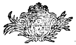
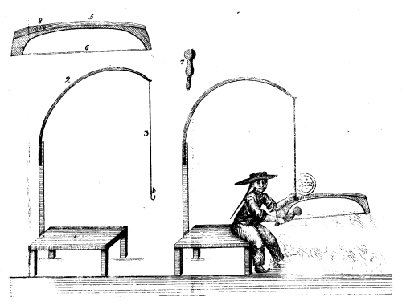

Nota de editor:
Devido à
existência de erros tipográficos neste texto,
foram tomadas várias decisões quanto à
versão final. Em caso de dúvida, a grafia foi
mantida de acordo com o original. No final deste livro
encontrará a lista de erros corrigidos.
Rita
Farinha (Jan. 2010)
PLANTAÇÃO DOS
ALGODÕES
J. S. Bettencourt
MEMORIA
SOBRE A PLANTAÇÃO
DOS
ALGODÕES.
MEMORIA
SOBRE A PLANTAÇÃO
DOS
ALGODÕES,
E sua exportação; sobre a decadencia da Lavoura
de
mandiocas, no Termo da Villa de Camamú,
Comarca dos
Ilhéos, Governo da
Bahia,
APPRESENTADA, E OFFERECIDA
A SUA ALTEZA REAL
O
PRINCIPE DO BRAZIL
NOSSO SENHOR,
POR
JOSÉ DE SÁ BETENCOURT,
Bacharel
Formado pela Universidade de Coimbra: e
actualmente encarregado em exames de Historia
Natural na Capitania da
Bahia; &c.

ANNO. M. DCC. XCVIII.
Na Officina de
Simão
Thaddeo
Ferreira.
SENHOR.
Eu tenho a honra de apresentar a V. A. R. o breve
resumo das minhas poucas observações sobre a
plantação dos Algodões, sua
exportação; e tambem das causas da decadencia da
lavoura de mandiocas no termo da Villa de Camamú, que
olhadas por V. A. R., Pai commum, será a dita lavoura dos
Algodões hum dos maiores ramos do nosso Commercio para
felicidade da Nação, e riqueza da Capitania da
Bahia, onde a Natureza tem depositado os Thesouros, de que
só he capaz a sua liberalidade.
Espero que V. A. R. haja de acolher com a grandeza do
seu Real Coração os bons desejos, que tenho, do
serviço de V. A. R., da felicidade do Paiz, e augmento da
Nação, no breve discurso, que tenho a honra de
apresentar a V. A. R. de quem sou com o maior respeito, e
veneração
Vassalo obediente
José de Sá
Betencourt.
A Terra,
mais rica na sua superficie, que nas suas entranhas, serve de theatro
á Sábia
Natureza, que a renova todos os dias, com as suas
producções; fazendo succeder por meio das
differentes, e multiplicadas sementes outras tantas especies de
vegetaes, que cobrem a superficie do nosso Globo, e fazem a felicidade
dos seus habitantes. Ella reparte com grande sabedoria os seus dons, e
faz que se propaguem sobre os differentes terrenos, que lhes
são proprios, já pela qualidade do seu
humus, já pela natureza do clima, sem que a destra
mão do Agricultor os possa fazer propagar á sua
vontade: assim vemos, que as plantas da Europa com difficuldade se
propagão em beiramar do Brazil; e algumas que á
força de trabalho crescem, e propagão, a sua
producção he
debil, e sem que os Lavradores possão tirar as vantagens,
que se
tirão na Europa, como vemos, e se observa na vinha, que mal
satisfaz a curiosidade do cultivador, sem que a
producção corresponda ao trabalho.
Outras, que vegetão, e não propagão,
como
[8]
a oliveira, &c. outras
de tal sorte amantes do seu paiz, que não
vegetão, nem propagão.
O mesmo, que observamos nas plantas da Europa, cultivadas no Brazil, se
observa nas plantas deste levadas para a Europa, que só
vivem em cazas de vidraças, subministrando-se-lhes com
estufas o calor, que lhes he necessario para a sua
vegetação.
O Agricultor póde modificar o terreno, fazendo-o mais ou
menos gordo, mais ou menos poroso, appropriando-o á natureza
da sua lavoura, mas não o clima em grande, que influe na
maior parte da vegetação.
Eu não me canço em referir as differentes
observações dos Filosofos, para provar, que o
clima influe mais na vegetação, do que a terra,
por ser esta materia huma, e muitas vezes discutida, e provada;
porque sendo a terra a mesma em toda a parte, e susceptivel de receber
as
modificações do Agricultor, vemos que ha grande
difficuldade em se fazer propagar as plantas de differentes climas
transplantadas; e ainda que saibamos, confórme os
verdadeiros princípios de
Agricultura, e de Chymica, que a terra he o meio, no qual se faz a
germinação, e que não serve
só de laboratorio, confórme o Abbade Tessier aos
succos, que lhes
são destinados; mas que entra tambem em grande parte na sua
composição, seja ella attenuada do modo,
que for, o que ainda existe nos occultos segredos da
[9]
Natureza, que o homem não
póde perceber, o que se conhece pelo residuo dos vegetaes
queimados; com tudo outras muitas experiencias
próvão, que o ar he muito necessario para a
perfeita vegetação, e que entra em grande parte
na
sua
composição.
A necessidade, que os vegetaes tem de agua para a sua
vegetação, he por todos bem conhecida,
não sendo demasiada, assim como o calor, que he o
princípio vivificante, o que tudo coopera, para que as
plantas cresção, e
produzão, confórme a qualidade do clima; que lhes
he analogo. Eu me não demoro em relatar theorias sobre o
princípio da vegetação; porque isto
sería exceder o plano, que me proponho; só me
basta provar, que o clima differente influe nesta, ou naquella lavoura,
para que o Agricultor perceba as utilidades com vantagem.
A mesma differença, que observamos nos Paizes da Europa em
relação aos de beira mar do Brazil, se observa
nestes a respeito dos do Sertão, ou terra dentro, onde
são as estações
mais regulares, e as chuvas vem em tempos determinados, e constantes, o
que faz, com que a lavoura seja igual, e sempre certo o tempo da
plantação.
O terreno da Villa do Camamú, que fica entre 14, e 15 gr.,
desviado da Bahia ao Sul 24 legoas, he o Paiz mais irregular nas suas
estações,
[10]
que tenho visto, porque, quer seja de verão, quer de
inverno,
sempre as chuvas são continuadas; e o calor no
verão, confórme o termometro de Fahrenheit,
não chega a mais de 80 gr. e meio
[1],
o que faz, com que as
plantações se conformem á
irregularidade do clima, e se não possa nelle
cultivar com vantagem, senão Mandiocas, Cafés,
Arroz, e Cacau, e não o Algodão, que he o
principal objecto; porque, ainda que cresça nas boas terras
de beira mar, a sua cultura se não póde fazer com
proveito, visto que o terreno lhe não he tão
proprio, e a irregularidade do clima rouba ao Lavrador as suas
esperanças, vindo as chuvas no tempo da colheita, a
destruir, e apodrecer o Algodão, ainda nos seus capulhos.
Esta irregularidade se observa nos Paizes, que ficão ao Sul
da Bahia entre 13, e
20 gráos, onde se não conhece verão,
nem inverno
[2],
senão pelo mais, ou menos calor, confórme os
ventos, que reinão nestas duas
estações; e
nunca o frio excede de 60 até 55 gr. do mesmo termometro,
tempo, em que reina o vento Sul, que sempre he acompanhado de chuvas.
[11]
A 14 legoas da Villa de Camamú, fazendo caminho de
Oest-Sudueste até encontrar as margens do Rio das Contas,
onde confinão as matas grossas, com as Catingas altas
[3], e
vão confinar a 12 legoas com as Catingas baixas
[4],
já a regularidade do clima se confórma com a
fertilidade do terreno, muito proprio para todas as
plantações, particularmente, para a lavoura do
Algodão, onde se acha silvestre no meio das ditas Catingas.
Este terreno, que fica a 26 legoas de beira mar separado pela mata, a
qual vem a confinar, com as que os naturaes do Paiz chamão
Catingas grossas, he sem dúvida o mais proprio para a dita
lavoura, porque o Algodão domestico, huma vez plantado, se
conserva por muitos annos, ainda sem nenhum beneficio, como o encontrei
na Fazenda do Rio das Contas, onde tinha sido plantado havia dezoito
annos, e se conservava no meio das Capoeiras
[5],
com tanto vigor, como
se fosse novamente plantado.
Todo o Sertão da borda do Rio das Contas
[12]
tem a mesma propriedade: toda a mata, que fica entre o
dito Rio das Contas da parte do Sul, e o Rio do Gragongi,
confórme a fé dos
bandeiristas
[6],
possue as mesmas qualidades.
Este vasto terreno, que principia a 13 legoas da beiramar, he cortado
de Sueste, a Noroeste pelo Rio das Contas, susceptivel de
navegação de grandes canoas, e outros muitos
rios, que vem cruzar com elle, tanto da parte do Norte, como do Sul,
sem a mesma facilidade de navegação, os da parte
do Norte são o Ribeirão de Area; ou Montanha,
Genipapo, Manageni, Rio das Pedras, Rio Preto.
Todo o Sertão da Conquista desde a fazenda do Rio das
Contas, fazendo caminho de Sul, que será de 40 legoas, tem a
mesma propriedade, não só pela qualidade do
terreno, como tambem pela regularidade do clima, que he tanto mais
regular, quanto mais se affasta da beiramar.
A margem do Rio Gavião, que vem fazer barra com o Rio das
Contas, seguindo o rio o caminho de Oeste, he igualmente propria para a
sobredita lavoura.
[13]
Os proprietarios das fazendas, que conhecem as vantagens desta lavoura,
a não fazem pela
razão, que logo exporei, quando fallar da sua
exportação.
A planta, que produz o Algodão, entra na Classe
Monadelphia Ordem
Polyandria, genero
Gossypium. Lineu, se servio, para
distinguir as especies, das differenças das folhas, e das
glandulas, que se achão em algumas especies, e
não em
outras, cujo conhecimento só fica pertencendo aos Filosofos,
e não ao do vulgo; razão porque me servi da
differença das sementes, e do pêlo, que as cobre,
confórme as suas cores,
por ser hum caracter constante no Paiz, e conhecido de todos, que fazem
uso desta cultura, ainda que em pequeno; e da união destas
mesmas sementes, ao que chamão caroço inteiro, ou
dividido.
Para se cultivar o Algodão basta derribar as Catingas altas,
ou Catingas baixas, logo que o tempo secco convida para este trabalho,
que he do mez de Junho por diante, e se deixão seccar
até o mez de Setembro. Os Soes, que neste tempo
são ardentissimos, seccão as madeiras de tal
sorte, que quando as chuvas avisão aos habitantes da sua
chegada pelos grandes trovões, que costumão haver
muitos dias antes, lhes lanção fogo, que reduz
tudo a cinzas, deixando a superficie da terra limpa, para se fazer a
plantação, sem maior
incómmodo,
[14]
ficando a terra estrumada, e fertil pelo
alkali vegetal.
A lavoura se faz com enxadas, abrindo covas de oito em oito
pés, onde se lanção as
sementes
[7],
e se cobrem com pouca terra; e porque o terreno ficaria
muito ocioso só com esta planta pela grande distancia, que
se lhe dá para a sua ramificação, em
quanto não chega ao
seu maior crescimento, e por se não ver o Lavrador obrigado
a alimpar a terra, que fica neste espaço, das hervas, que
nascem sem maior proveito, lhe planta o milho, e feijão, que
tudo cresce igualmente, sem que fação damno ao
Algodoal.
A estação, que começa a ser chuvosa,
não céssa de regar a lavoura regularmente todas
as tardes, e muitas vezes á noite, vindo de manhã
o Sol até o meio dia animar a lavoura; algumas vezes
acontece virem as chuvas de oito em oito dias, por intervallos, no mez
de Outubro, até chegar a meiados de Novembro, tempo, em que
ellas são constantes.
A fertilidade do terreno faz crescer com as
[15]
plantas, outras muitas hervas, que o
Lavrador he obrigado a arrancallas, ou sachallas para desaffogar a sua
lavoura, que então cresce prodigiosamente; e quando se
dá a primeira limpa, se arrancão os
pés de Algodão superfluos na cova
[8], deixando
só dous, que se capão, quando a planta
já tem altura sufficiente para brotar novos galhos ao redor
do tronco, e fazer com esta operação maior lucro
na colheita.
No mez de Fevereiro costumão os Lavradores dar a segunda
monda á sua lavoura, confórme as suas differentes
occupações, e abundancia da herva, que torna a
renascer depois da primeira limpa.
No mez de Maio se faz a colheita do milho, e do feijão,
deixando o terreno desembaraçado, e limpo, para no mez de
Julho se dar princípio á colheita do
Algodão, que continúa até
o mez de Outubro, e Novembro, tempo, em que se
pódão os Algodoeiros, para no segundo anno darem
huma fertilissima colheita.
A necessidade, que não céssa de
ameaçar o Lavrador, o disperta a continuar o mesmo trabalho,
para ter certa a sustentação de milho, e
feijão, que já não póde
ser, senão
em terreno novo, que serve para augmentar a dita
plantação com a mesma
regularidade.
[16]
Deste modo veria o Lavrador crescer, com o seu trabalho, as suas
riquezas, não só pela
felicidade da lavoura, seu rendimento, e duração
da planta, como pela diminuta despeza no seu fabrico, se hum obstaculo
lhe não embaraçasse a
execução de hum plano tão util ao
Commercio, e ao Estado.
O Abbade Tessier no seu discurso preliminar sobre a Agricultura se
expressa da maneira seguinte.==O mais poderoso meio de dar á
Agricultura toda a actividade, de que póde ser susceptivel,
he praticar caminhos de communicação em os
Paizes, onde os não ha, e canaes navegaveis para transporte
das mercadorias, &c. &c.
Encyclopedia Dictionario de
Agric, pag. 20.
Não he a falta do caminho, que faz o embaraço da
exportação, mas sim a falta de
segurança deste mesmo caminho para socego, e frequencia dos
viandantes, que, na travessa da mata, se vêm accommettidos do
Barbaro Gentio
Cotachós, privando-os da
facilidade de transportarem as suas cargas pelo rio abaixo
até o Ribeirão da Arêa,
que fica a 13, até 14 legoas da Villa de Camamú,
de donde se podem muito bem conduzir em cavalgaduras, para deste porto
serem enviadas para a Capital, se houvesse naquelle lugar hum corpo de
homens, que os fizessem conter nos seus limites, repellindo a
força das invasões.
[17]
Este caminho, em outro tempo aberto por Ordem do Excellentissimo Manoel
da Cunha Menezes, quando governou a Bahia, terminando na estrada, que
vai para os Maracazes, dirigida dos Sertões da Conquista,
que ficão abaixo das
Contagens de Rio Pardo, e Tocajós, se fechou, não
só pela infestação do Gentio, mas pelo
longe,
máo passo, e falta de pastagens para os animaes, o que
conhecendo eu bem, obrigado da necessidade dos animaes precisos para o
costeamento dos meus Engenhos, pela miseria, e lastimosa necessidade do
povo, me resolvi a fazer outro, seguindo differente rumo, onde gastei
tres annos sem adjutorio do povo, nem da Camara, nem doutrem, perdendo
em todo este tempo o lucro das minhas lavouras, e o fiz muito mais
perto, e por hum terreno, que o acaso subministrou com algumas
pastagens.
Não he preciso para segurança deste caminho mais,
que huma Povoação de Judios mansos chamados
Mongoiós no
Ribeirão da Arêa. Não são os
particulares, que tem este poder; mas sim o Governo, onde existe a
Régia Authoridade.
Eu não conheço homens mais aptos para este fim,
do que a domestica Nação dos Indios
Mongoiós, não
só pelo seu grande valor, e intrepidez, como por serem huns
homens acostumados á vida silvestre, e que a maior parte do
tempo vivem da cassa, e da pesca, ainda que sejão
Agricultores, e
[18]
amantes da lavoura,
não soffrendo maior detrimento, em quanto crescem no
primeiro anno as suas lavouras, e desejão isto mesmo,
confórme o que me disserão, pelas
razões, que vou dar.
Primeira, porque ha muito tempo não recebem as ferramentas,
que costumavão receber por Ordem do Governo. Segunda, porque
na grande distancia, em que morão, não tem, quem
represente
as suas necessidades ao Governo para as remediar.
Terceira, porque se vêm opprimidos, sem poderem fazer as suas
lavouras, e as que fazem, serem destruidas pelos animaes domesticos dos
habitantes.
Quarta, pela oppressão, que soffrem, de quem os governa, sem
que o longe lhes permitta a facilidade, de se poderem queixar.
Quinta, porque o terreno da beira do Rio he mais abundante de cassa, e
peixe, e muito fertil; e sendo ahi animados de huma prudente
administração, de que são muito
susceptiveis, podem fazer a sua felicidade, de que resultão
ao Estado as seguintes vantagens.
Primeira, confórme o que me disserão, quando aqui
chegárão na expedição
da Bandeira contra os
Cotachós, logo, que
elles viessem para a beira do Rio, as outras Aldêas da sua
mesma
Nação, que ainda não
sahírão das matas, se virião
encorporar
[19]
com
elles, assim que lhes constasse da sua felicidade, debaixo da doce
administração, e
protecção do Estado.
Segunda, estes homens conciliados, debaixo da
direcção de hum Director desinteressado,
serão outros tantos valerosos soldados, que com facilidade
dalli melhor podem ser chamados, confórme as necessidades da
beiramar, do que do fundo dos Sertões, onde presentemente
habitão.
Terceira, ficando a estrada livre da infestação
dos
Cotachós, o Commercio
será livre aos viandantes, para com segurança
trazerem as suas mercadorias, de cuja facilidade resulta a
animação de huma lavoura tão
importante, servindo estes homens, para exportarem nas canoas as
grandes sommas de Algodão, que a
emulação
fará cultivar em todo o vasto terreno do baixo
Sertão da
Reraca[9],
Conquista[10],
e
Borda da mata, e das margens de
muitos rios navegaveis, que vem ter ao dito Rio das Contas.
Quarta, o poder-se frequentar a dita Estrada da beira do Rio para a
Villa do Camamú, por ficarem os moradores livres do receio
das invasões dos
Cotachós, que se
entranharão pelas matas do Sul, logo que souberem da
residencia destes homens
[20]
na beira do rio, tão valerosos, e destros não
só no manejo das suas armas, como das nossas.
Quinta, o grande Commercio de
Ipecúcuanha, que elles
podem fazer, tirando-a nas margens do mesmo Rio das Contas,
Ribeirão da
Arêa, e matas do
Gragongi, onde ha com abundancia.
He experimentado na Agricultura, que a falta de animaes para o seu
fabrico faz a sua decadencia. Esta verdade, que tem sido provada em
muitos Paizes, confórme os Abbades
Rosier, e
Tessier, grandes escritores, e
Mestres desta Sciencia, não deixa de ser lastimosamente
comprovada neste Paiz, que sendo, em outro tempo, abundante de
farinhas, unico commercio, que fazia para a Capital, hoje se
vê reduzido á ultima miseria de sorte, que a
exportação, que presentemente se faz para a
Bahia, deste genero tão necessario, he, para a que se fazia
em outro tempo, como de 1 para 1000.
A razão desta decadencia he bem conhecida. Em quanto
havião matas virgens á borda do mar, ou de muitos
rios navegaveis, que entrão algumas legoas terra dentro, a
lavoura se fazia com facilidade, e com a mesma se conduzião
as farinhas ás costas dos escravos, e de poucos animaes para
os pórtos de embarque. Hoje porém que
já
as terras da borda d'agua estão reduzidas a Capoeiras, huma,
e muitas vezes plantadas, e minadas de formigueiros,
[21]
destruidores da mandioca, he o producto da
lavoura nas capoeiras, para o producto, que tiravão os
Lavradores nas matas virgens, como de 5 até 10, para 40, 50,
60, e para 100, o que se próva pela
tradição dos antigos
Lavradores, e pelo preço das farinhas desse tempo, que nunca
excederão a 480, sendo o preço usual de 240, a
320 o sacco
[11],
e o seu preço actual 1280, a 1600, sem
esperanças de melhoramento, porque sempre o preço
he na razão inversa da abundancia do
genero.
Os póvos humildes por sua natureza, e pela
creação mui grosseira, se não
animão a procurar melhoramento, não só
pela pequenhez do seu animo, como por lhes faltarem os animaes
necessarios, para conduzirem de mais longe as suas farinhas. A falta de
açougue he outro obstaculo. Os Póvos,
não tendo huma certa sustentação,
não se
animão a apartarem-se dos mangues, para lhes não
faltar o sustento do Carangueijo
[12].
Nas tres legoas, da borda dos rios para dentro, estão as
boas terras de lavoura de mandiocas, que
[22]
pela sua grande
producção, se os Lavradores se animassem a
entrar, tendo abundancia de animaes para transporte das suas farinhas,
como se vê na ribeira de Nazaré, farião
renascer a abundancia deste genero tão precioso neste paiz.
Outros muitos estabelecimentos de Engenhos de assucar se
poderião fazer, de que resultarião ao Estado
grandes vantagens, se houvesse no Paiz abundancia de animaes, o que
não succede pela falta de abertura ou de estrada.
A Agricultura entretem de dous modos o commercio, tanto interior, como
exterior, fazendo propagar os generos de
exportação para as manufacturas, e os que se
consomem na terra, e servem de sustentação. Faz a
base fundamental da
felicidade dos Póvos, e da riqueza do Estado.
O Arraial do Caitité, que fica 30 legoas inda acima das
Cabeceiras do Rio das Contas, que dista 130 legoas, ou pouco menos do
primeiro porto de embarque, que he na Villa da Cachoeira, era
á 25 annos pobre, deserto, e só manejava o
diminuto commercio de gados, mas de muito pobres fazendas se
vê hoje o mais rico daquelles Sertões,
depois que derão princípio á cultura
do Algodão,
havendo nelle grandes Lavradores, pela facilidade, e
segurança de fazerem descer por huma estrada frequentada os
seus generos.
Os Póvos de Minas Novas, a exemplo destes,
[23]
não obstante o serem duas vezes mais
remotos do porto de embarque, fizerão o mesmo, a pezar do
grande dispendio na exportação: ora se estes
Póvos, a pezar da grande distancia, achão
utilidade nesta lavoura tão recommendada pela nossa Academia
das Sciencias de Lisboa sobre o Algodão da Persia, em que
logo fallarei, que vantagens não terão os que
cultivarem á borda da mata do nosso Sertão, que
está tão perto, ainda havendo a facilidade de se
conduzirem as cargas pelo rio abaixo em canoas, até o
Ribeirão da
Arêa, sendo o terreno o
mais proprio, que se conhece para a dita lavoura.
As sementes do Algodão da Persia, que me forão
entregues com a norma impressa da sua cultura, eu fiz plantar em
differentes tempos, e não nascêrão, por
já terem o
germe destruido, e assento que se deverião mandar vir
frescas, mettidas em vasos de vidro tapados, se possivel for,
hermeticamente, e se poderem vir logo em direitura muito melhor
será para não padecerem as sementes
alteração na parte oleosa, que contém
a polpa, que cobre o germe, ou plumula.
O Algodão da India, que cá temos, tem nas
sementes alguma semelhança com o Algodão da
Persia, por serem alguma cousa cobertas de hum pêlo branco,
porém não tanto, como o da Persia; a sua
flôr
he de hum vermelho côr de fogo, caracter
[24]
distincto do
Algodão de Macassar, o qual ainda conservamos em muito
pequena quantidade, por ser mais difficil no colher, porém
bastante para se poder augmentar a plantação;
reliquias
que nos ficárão dos generos da India, que em
outro tempo aqui forão cultivados, como a Canella, a
Pimenta, o Gengibre, e o mesmo Algodão, de que remetto o
exemplo na pequena caixa das amostras, onde vão seis
qualidades de Algodão; a saber.
Algodão de caroço inteiro, comprido, e preto, que
he de muita vantagem na sua cultura, porque he mais fertil em
lãa, inda que de qualidade mais áspera, como se
póde ver na amostra, que remetto, e só
póde servir para as obras mais grossas. Chamão a
este Algodão vulgarmente do Maranhão; cuja arvore
he de menos
duração.
Algodão de caroço inteiro, e preto,
porém não tão comprido, como o do
Maranhão,
a que chamão Algodão vulgar; a sua lãa
em
tudo se assemelha á do Maranhão, porém
tem
differença por ser o seu fio mais fraco, que o do
Maranhão,
porém a sua arvore he de mais duração.
Algodão de caroço unido, coberto de hum
pêlo pardo, a que chamão Algodão de
caroço
pardo, fertil em lãa mais macia, e doce, que a do
Maranhão, e produz hum fio fortissimo: a sua arvore he de
bastante duração.
[25]
Algodão de caroço unido, coberto de hum
pêllo verde, a que chamão Algodão de
caroço verde, a sua lãa he abundante, doce,
branda, e forte no fiar: a sua arvore he de huma grande
duração.
Estas duas qualidades podem servir para obras mais delicadas como
cassas vulgares.
Algodão de caroço inteiro, e preto, de
lãa parda, ou côr de ganga; a sua lãa
he muito macia, e forte: a sua arvore he duravel, póde
servir para se fazerem as gangas, e outras obras de fustões,
em que entrem listras côr de gangas.
Algodão da India de caroço dividido, coberto de
hum pêllo branco bem semelhante aos caroços, ou
sementes do Algodão da Persia, de que já
fallei: a sua lãa he de hum branco fino muito doce, que
produz hum fio forte, capaz para as obras mais delicadas, como cassas
de sopro, &c.
Algodão da India de caroço preto sem ser coberto,
e dividido; a sua lãa he igual á do
precedente com a differença de que o caroço
não
tem pêllo; a maçãa he maior, e os
casulos,
ou capuchos mais abundantes de lãa: tambem tem a
differença nas arvores, porque a do caroço preto
he mais crescida, quando a do caroço coberto he muito
rasteira, ainda que a sua duração seja
igual, pois, sendo cultivadas em terreno fertil, e estrumado,
aturão muitos annos.
As arvores, que produzem o Algodão de caroço
[26]
pardo, verde, e preto, vulgar, e
de côr de ganga, são persistentes, e
aturão muitos annos; a
do Maranhão não chega a aturar dous annos neste
Paiz, ainda que não ha exemplo da sua cultura no
Sertão, onde o terreno he mais proprio para a dita lavoura,
e atura hum pé de Algodão entre o mato sem nenhum
beneficio 25 annos, e muito mais, porque ainda existem alguns, que
já tem esta idade.
Temos outras duas qualidades de Algodão silvestre, que se
encontra em abundancia nas Catingas á margem do Rio das
Contas, tendo ambas as mesmas propriedades do Algodão da
India, tanto nas sementes, como nas arvores só com a
differença, de que huma destas especies tem a lãa
parda, e áspera por falta de cultura.
O Algodão domestico, cultivado nas Catingas, dá
hum producto consideravel, o qual se póde ver na taboa
analitica do rendimento do Algodão.
A execução destas vistas importantes,
não póde pertencer a outrem, senão ao
Rei, porque ellas pedem despezas, que excedem á fortuna dos
particulares, e necessitão da animação
das Ordens, e
do poder do Soberano, para transportar casaes de Ilheos, do mesmo modo,
que se fez para a Ilha de Santa Catharina, para dar maior
avanço á cultura dos
Algodões, e cultivar-se hum terreno, que póde
sustentar muitos milhões de Vassallos de Sua Magestade, e
descobrirem-se
[27]
immensos thesouros,
que se achão sepultados debaixo das matas, que, por falta de
cultura, se não conhecem; e em quanto o Estado
não dá sobre este importante objecto as
providencias precisas, basta que o Governo determine a residencia dos
Indios
Mongoiós na
beira do Rio, para que ficando a estrada livre das invasões
dos
Catachós, se dê
princípio a huma tão importante lavoura, como
tambem para que possa por ella descer todo o Salitre, que se fabricar
não só nos Montes
Altos, como em todo o terreno nitroso do Ribeirão da Giboia,
que fica a 40 legoas de beiramar, de muito facil
condução, fazendo-se primeiro
conduzir em carros até o sitio chamado da Passagem, e dahi
em canoas até o Ribeirão da
Arêa, como tenho
já dito a respeito da exportação
do Algodão, e com muita facilidade conduzir-se para o
primeiro porto de embarque: no caso que seja o Salitre, o que torna as
aguas da dita Ribeira de hum gosto salgado frio, sendo as terras das
suas margens bastante salgadas; o que unicamente observei, sem que
podésse analysallas pela
precipitação, com que por ahi passei, e
não ter vasos suficientes para o poder fazer: posto que
tinha a noticia, de que João Gonçalves da Costa
fizera seccar huma porção deste Sal, que dizia
ser Salitre, e o tinha trazido a esta Cidade da Bahia no tempo do
Illustrissimo Governador Manoel da
[28]
Cunha Menezes, que, lançado no fogo, fazia a
detonação, deixando pela sua impureza bastante
terra; porque o seu author não possuia os conhecimentos
precisos, para fazer a perfeita deputação, o que
só póde decidir o exame filosofico, para
então se poder verificar, sem a menor
dúvida, inda que me affirmão pessoas de toda a
fé, que a tal massa detonava bastante exposta ao fogo; e
não só póde servir o beneficio da
dita estrada para a facilidade da exportação
deste genero, mas
tambem de todos os ramos, de que se segue tão grandes
vantagens ao Commercio, e por consequencia ao Estado.
O fortunatos nimium, sua si
bona norint,
Agricolas!...
Virgil. Georg. Liv. 2.
[29]
DESCRIPÇÃO
DAS DIFFERENTES ESPECIES
DE
ALGODÃO
QUE TEMOS NO BRAZIL.
Algodão
do Maranhão de
Caroço inteiro, e comprido.
[13]
A sua maçã, ou pericarpio comprida bastante
grossa, que contém nas suas valvulas, ou cellulas tres
capulhos, ou capuchos na frase do Paiz, da huma abundante
lãa, que cobre nove até dez
sementes unidas em hum só corpo, a que chamão
caroço inteiro, o qual tem de comprimento pollegada e meia.
A sua arvore em beiramar da Villa do Camamú só
atura dous annos, e não ramifica como as outras, porque da
altura de tres palmos da terra, onde o tronco he grosso bastante, brota
muitas vergonteas, sem que faça maior
ramificação.
A sua lãa, não deixa de ser a mais
áspera que cá temos, e póde servir
para muitos usos.
[30]
Algodão
de caroço pardo, e
inteiro.
[14]
A sua maçãa mais grossa, que a precedente,
porém não tão comprida,
contém de tres até quatro valvulas, que
encerrão outros tantos capulhos, ou capuchos de huma
abundante lãa, muito clara, e doce, que cobre nove sementes
unidas em hum caroço, coberto de hum pêllo pardo,
o seu comprimento he pouco mais de pollegada; o fio, que produz este
Algodão, he forte, e por isso se póde fiar bem
delicado.
A sua arvore he grossa bastante, e de huma grande
ramificação, atura muitos annos, e por isso de
grande vantagem.
[31]
Algodão
de caroço verde, e
inteiro.
[15]
A sua maçã em tudo
semelhante á precedente, contém quatro capulhos;
de huma lãa clarissima, e muito fina, que cobre nove
sementes unidas cobertas de hum pêllo verde, caracter
distinctivo desta especie; este Algodão produz hum fio
fortissimo, e por isso muito proprio para as obras mais delicadas.
A sua arvore he em tudo semelhante á precedente, e quasi
estas duas especies são analogas, e só as
differença a côr do
pêllo, que cobre os caroços.
Algodão
de caroço inteiro de
lãa parda côr de ganga.
[16]
A sua maçãa he ordinaria, e produz tres ou quatro
capulhos, ou capuchos de huma lãa parda, que cobre hum
caroço inteiro, e unido, que he composto de sete e nove
sementes.
A sua arvore he persistente, e de muita duração.
[32]
Tem as mesmas propriedades que o Algodão de
Maranhão, unicamente com a differença do seu
caroço ser menor, composto de sete ou nove sementes, e raras
vezes de dez.
A sua arvore he de grande duração.
Algodão
da India de caroço
dividido, e cuberto de hum pêllo branco.[18]
A sua maçãa he pequena com tres quatro valvulas,
contém outros tantos capulhos de huma lãa
finissima, muito alva, que cobre sete sementes divididas, que faz o
caracter do caroço dividido.
A sua arvore he rasteira, e muito duravel. Esta semente nos veio da
India, em companhia do Cravo, da Canella, e do Gengibre, e se tem
conservado até agora.
Tambem temos outra especie de Algodão da India de
Caroço dividido, e preto de lãa muito macia, e
alva.
A sua arvore he mais alta, que a precedente.
[33]
Temos ainda duas especies de Algodão naturaes do Paiz, que
se achão silvestres nas margens do Rio das Contas, e bem
semelhantes ao Algodão da India, tanto nas suas sementes,
como na sua arvore, tendo huma das duas especies a lãa
áspera, e parda.
Eu as fiz plantar em beiramar, mas no tempo da
fructificação, as chuvas
deitárão abaixo as novidades, sem ficar huma
só maçãa.
A sua arvore he de grande duração.
[34]
CALCULO ANALYTICO.
| Hum escravo
trabalhando em Algodão dá de
rendimento no
Sertão |
|
250$000 |
| Prepára
terra
para |
|
500
pés |
| Que
dão de
lãa |
|
62 e 16 a
razão de 4
lib. por pé |
| Tirada
de 1364 maçãas, que produz cada
pé de colheita
ordinaria. |
|
| Além
disto planta o milho, e feijão para o seu
sustento, e para crear porcos, gallinhas, &c. |
|
|
| O
que melhor se conhece na Taboa―Synthetica. |
|
|
FIM.
CALCULO SYNTHETICO
DO
RENDIMENTO DO ALGODÃO DO
CAROÇO PARDO, VERDE, E
DO MARANHÃO.
| Producção
do Algodão
em |
Maçã |
Capul. |
Gr. |
Oit. |
Lib. |
Arrob. |
Pés
de
Algod. |
Preço |
|
| Huma
maçãa
contém |
|
3
até
4 |
|
|
|
|
|
|
|
| Hum capulho
dá de
Lãa |
|
|
9
p.
m. |
|
|
|
|
|
|
| Oito ditos
dão |
|
|
|
1 |
|
|
|
|
|
| 1024 Capulhos
dão |
|
|
|
|
1 |
|
|
|
|
| 1024 Capulhos
reduzidos a
Maçãas
dão |
341 |
|
|
|
|
|
|
|
|
| Cada
pé de
colheita ordinaria dá |
1364 |
|
|
|
|
|
|
|
|
| Maçãas
dão de
Lã |
|
|
|
|
4 |
|
|
|
|
| Cada
trabalhador prepara terra
para |
|
|
|
|
|
|
500 |
|
|
| 500
pés dão de
Algodão |
|
|
|
|
|
62-1⁄2 |
|
|
|
62 arrob.
e 1⁄2
vendido
pelo
preço corrente da Praça de 6:400
625
6400
――――――
250000
3750
―――――――-
400000(0
|
|
|
|
|
|
|
|
400 |
000 |
62
arrob. e 1⁄2
no Sertão
vendida a 4:000
rende
625
6400
―――――――-
250000(0
|
|
|
|
|
|
|
|
250 |
000 |
Annuncio de
huma máquina singéla
de carmear o Algodão, vista na China.
Por
* * *
Com huma Estampa.
1. Hum banco donde se assenta o carmeador. 2. Huma verga
flexivel. 3. Hum cordão,
donde suspende o arco. 4. Gancho de ferro que engata na argola do arco.
5. Hum arco de páo. 6. Huma corda de rabecão
bastante grossa. 7. Hum maço pequeno com que bate na corda,
e com o dente que tem, pega na dita corda, e puxando para si, faz hum
estremecimento grande, o que faz sacudir, carmeando, dividindo todo o
çujo. 8. Argola de ferro, donde engata o gancho N.º
4.

Notas:
[1]
No maior calor, que he do meiodia para
tarde, e muitas vezes no outro só chega a 60 na mesma
estação.
[2]
Porque tanto chove de verão
como de inverno, e muitas vezes o verão he mais chuvoso, e
só a
differença das horas nos dias he que os faz
distinguir.
[3]
Coá tinga quer
dizer mato branco, como são
os de terras fracas.
[4]
Catingas baixas, são mais
baixas duas vezes, que as Catingas altas.
[5]
Capoeiras, palavra
Europea substituida por corrupção a Brasiliana
Có
cuéra, rossa antiga.
[6]
Bandeiristas,
são os homens,
que encorporados debaixo de hum Chefe atravessão as matas
para seguirem os Judios, que assaltão as propriedades, e
estradas, ou mesmo para os amansar, e cada hum delles separado se chama
Bandeirista.
[7]
Ha
huma observação,
em que as sementes de Algodão de caroço inteiro
se devem plantar com
os caroços unidos sem se dividirem, para sahir o
Algodão com os caroços unidos, que sendo
divididas as sementes, assim produz o Algodão com as
sementes divididas.
[8]
Porque se planta o caroço inteiro.
[9]
Nome proprio do lugar.
[10]
Nome proprio, com que ficou
pela
conquista dos Indios Mongoiós, este
lugar.
[11]Sacco,
medida de dous alqueires do
Brazil, que corresponde a quatro alqueires de
Portugal.
[12]Animal,
que vive na lama, que he coberta
de arvores, a que chamão mangues, e são banhados
da maré. Genero cancer. Especie cancer
hirsutus.
[13]Genero
Gossypium de
Lin.
[14]
Gossypium
hirsutum.
[15]
Gossypium.
Xilon Americanum
præstantissimum semine virescente Tournef.
[16]
Gossypium.
Barbadense de Lin.
Algodão de Sião.
[17]
Gossypium.
[18]
Gossypium
arboreum de Lin.
Algodão de Macassar.
Lista de erros corrigidos
Aqui
encontram-se
listados todos os erros encontrados e corrigidos:
|
Original |
|
Correcção |
| #pág.
9 |
su? |
... |
sua |
As variações de nomes próprios foram
mantidas de acordo com o original.